在虚拟机上安装Linux，前提工作：
需要用到的软件：VMware、Xshell
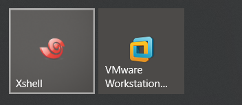
需要用到的映像文件：CentOS-6.5-x86_64-bin-DVD1.iso
注：只要是属于Linux系统的映像文件都可以，例如Red Hat、Ubuntu、CentOS等等
这里给大家介绍CentOS的安装教程
准备好以上工作之后，打开虚拟机。
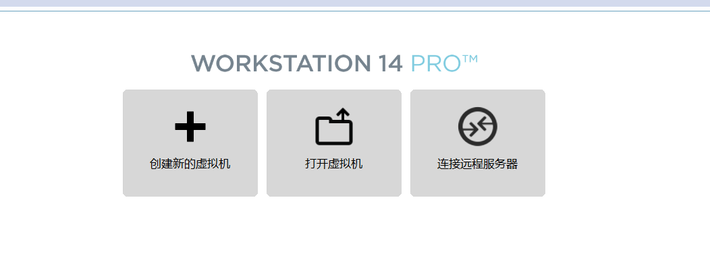
点击创建新的虚拟机
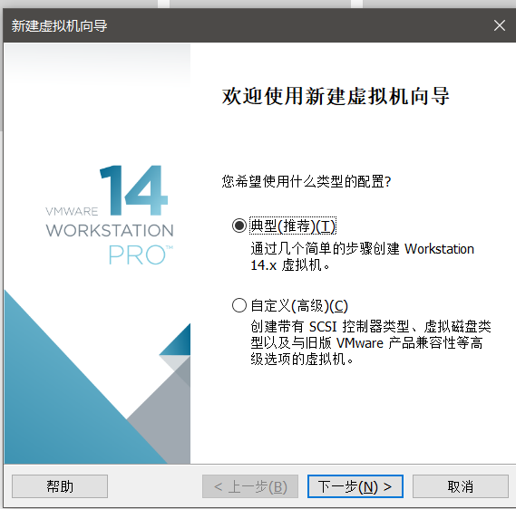
选择默认的典型安装，点击下一步
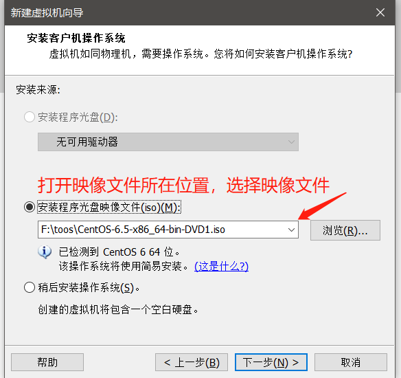
选择好文件之后，点击下一步

这里需要给Linux系统起一个名字，就像Windows一样，给一个新用户名。然后输入密码，再次确认密码。输入完成后点击下一步
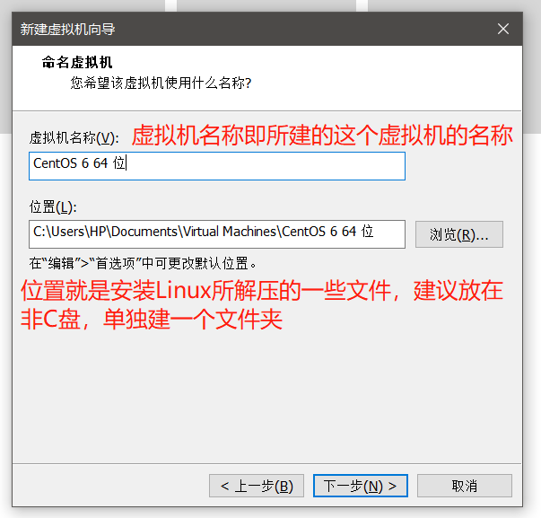
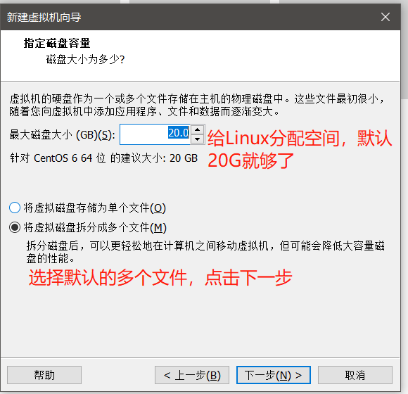
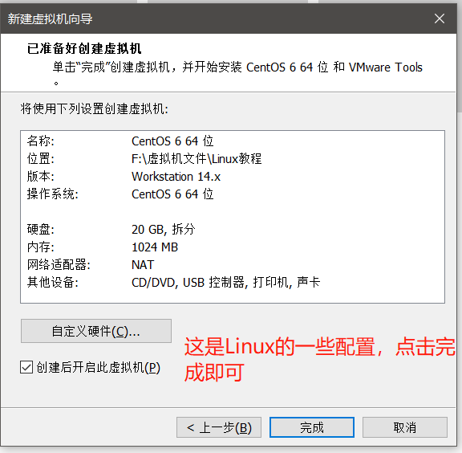
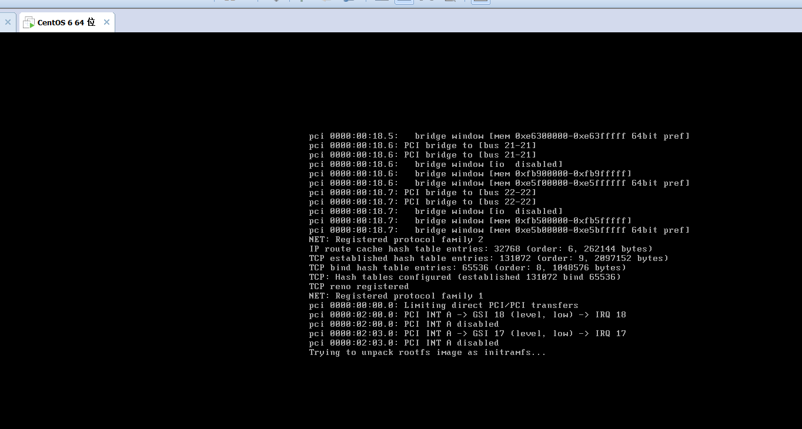
等待其自动加载，完成之后，看到下图红色OK，回车即可
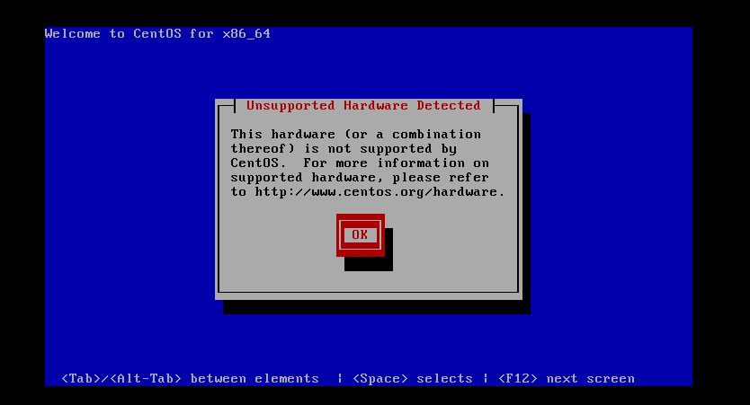
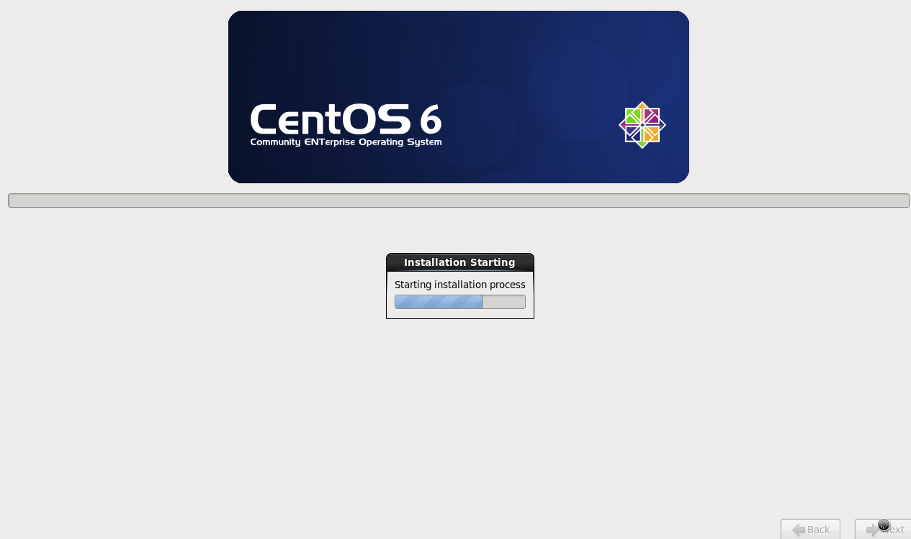
正在安装虚拟机......
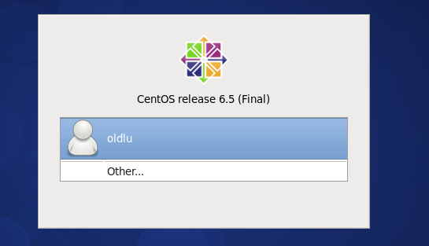
安装好之后，登录用户，第一个是创建虚拟机的时候起的用户名，other是用其他用户登录，在这里我们可以选择other，用户名写root，因为root权限最高，密码同样是创建虚拟机时的密码
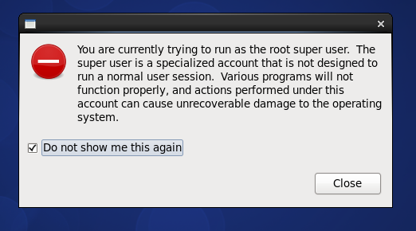
到这一步打上对勾，点击close即可。此时，Linux虚拟机已经安装完成。
看到下面这个界面，说明你已成功进入Linux下的CentOS系统了。
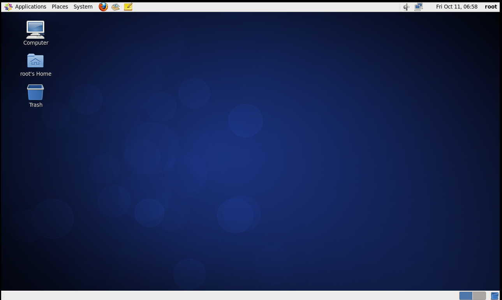
下一步打开终端，看下图。
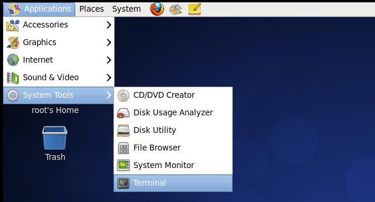
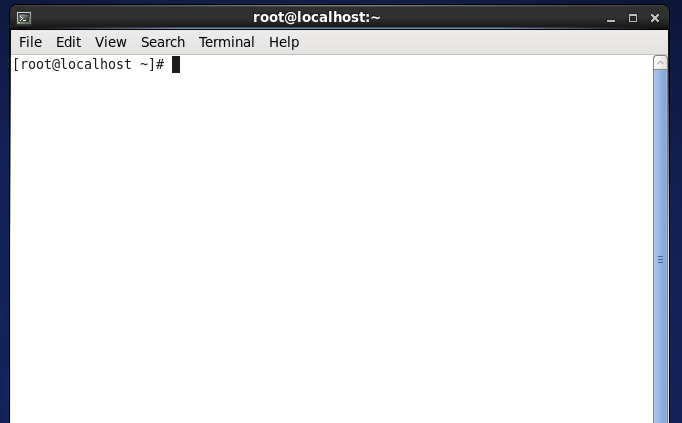
终端即输入命令的地方，在终端，可以控制Linux的操作。
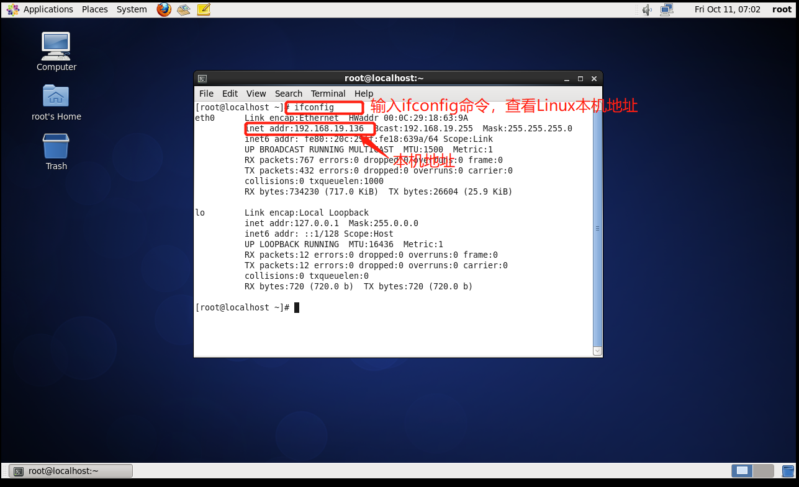
由于在虚拟机上安装的Linux,所以每次在虚拟机上进行操作，鼠标都会进入到虚拟中的系统里面，只有按CTRL+ALT才能切换出来，每次进行这样的操作有点麻烦，所以在此我们引入了Xshell软件。
打开Xshell
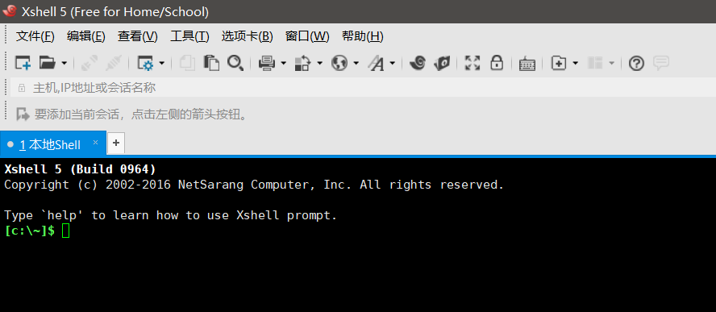
新建文件，把Linux地址粘贴进去，点击确定。看下图
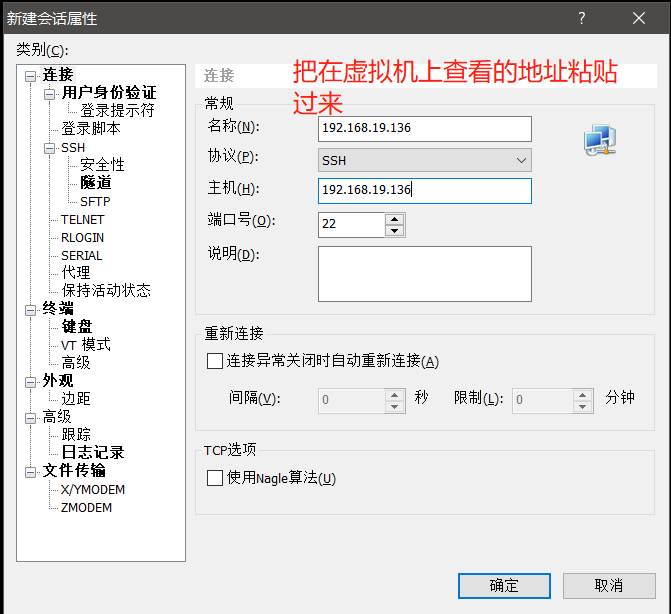
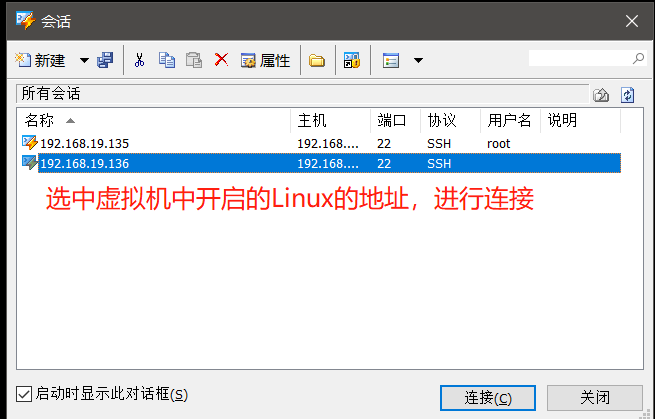
看到下图界面，就说明已经连接成功了。即安装Linux及在Xshell连接Linux都已完成，可以开始对Linux的操作。
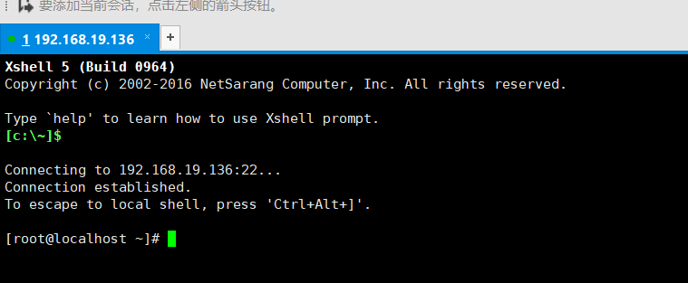